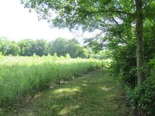

Forests
Forests are one of the most beautiful places to venture about anywhere. Trees, dirt paths, wild animals roaming about. Such is the work of nature. After all, it was what the U.S. once was before the times eventually called for change. It's somewhat for the greater good in a sense since city and nature have balanced themselves out. If you could call it that.
In Tennessee alone, there are 15 state forests, which means that they are protected by the state and managed by the state government. For the ones in the Volunteer State, these state forests range from simple coves in the mountains, to bottomlands that follow along the Mississippi River. They offer all kinds of nature activities, such as hiking and bird watching. However, many of the forests were in terrible condition when they were acquired by the state. Many eroded or heavily timbered. Because of this, new trees had to be planted to control the erosion while the rest grew out naturally.

Examples of Common Animals
- Mammals: Rabbits, foxes, squirrels, deer, bears, bobcats
- Insects: Ladybugs, bees, spiders, beetles
- Reptiles/Amphibians: Turtles, snakes, frogs, salamanders
- Birds: Hummingbirds, cardinals, woodpeckers, bluebirds